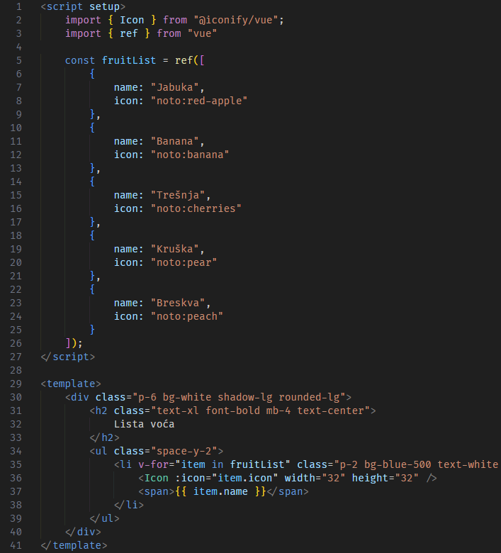
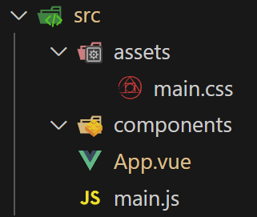
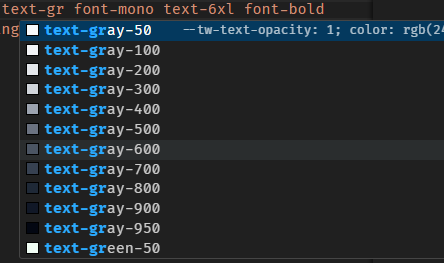

Nositelj: doc. dr. sc. Nikola Tanković
Asistent: mag. inf. Alesandro Žužić
Ustanova: Sveučilište Jurja Dobrile u Puli, Fakultet informatike u Puli
 Fakultet informatike u Puli
Fakultet informatike u Puli
Vue je JavaScript okvir (framework) za izradu korisničkih sučelja. Građen je na standardima HTML-a, CSS-a i JavaScript-a i pruža deklarativno programiranje bazirano na komponentama što omogućuje efikasnu izradu korisničkih sučelja bilo koje kompleksnosti.
Posljednje ažurirano: 25.2.2025.
Vue.js je JavaScript okvir koji se koristi za izradu dinamičkih i interaktivnih web aplikacija temeljenih na promjenjivim podacima (data-driven). Omogućuje učinkovito ažuriranje korisničkog sučelja bez potrebe za ponovnim učitavanjem cijele stranice.
Vue se često koristi za izradu Single Page Applications (SPA) – aplikacija koje učitavaju jednu HTML stranicu i dinamički mijenjaju njezin sadržaj ovisno o interakciji korisnika, bez potrebe za ponovnim učitavanjem stranice s poslužitelja.
U SPA arhitekturi:
Ovakav pristup poboljšava korisničko iskustvo jer aplikacija radi brzo i fluidno, bez zastoja uzrokovanih ponovnim učitavanjem stranice.
<!DOCTYPE html>
<html lang="hr">
<head>
<meta charset="UTF-8">
<meta name="viewport" content="width=device-width, initial-scale=1.0">
<title>Minimalna Vue aplikacija</title>
<script src="https://unpkg.com/Vue@3/dist/Vue.global.js"></script>
</head>
<body>
<div id="app">
<button @click="count++"> <!-- Event handling -->
Count is: {{ count }} <!-- Template syntax -->
</button>
</div>
<script>
const { createApp, ref } = Vue;
createApp({
setup() {
return {
count: ref(0) // Reactive variable
};
}
}).mount("#app");
</script>
</body>
</html>

Gornji primjer pokazuje dvije ključne značajke:
Deklarativno renderiranje – Vue koristi
template sintaksu unutar HTML-a kako bi prikazao
dinamičke podatke. Promjene u varijabli
count automatski se prikazuju u DOM-u.
Reaktivnost – Vue koristi reaktivne
varijable (ovdje ref(0)) kako bi pratio
promjene i ažurirao korisničko sučelje bez potrebe za ručnim
manipuliranjem DOM-a.
Ako bismo istu funkcionalnost implementirali bez Vue.js, morali bismo ručno ažurirati DOM:
<!DOCTYPE html>
<html lang="hr">
<head>
<meta charset="UTF-8">
<meta name="viewport" content="width=device-width, initial-scale=1.0">
<title>Minimalna aplikacija bez Vue.js</title>
</head>
<body>
<div id="app">
<button id="counterButton">
Count is: 0
</button>
</div>
<script>
const counterButton = document.getElementById("counterButton");
let count = 0;
counterButton.addEventListener("click", () => {
count++;
counterButton.textContent = `Count is: ${count}`;
});
</script>
</body>
</html>
Vue koristi komponente – modularne i višekratno iskoristive dijelove sučelja koji imaju vlastitu logiku, stil i podatke. Komponente olakšavaju održavanje kôda i omogućuju lakšu skalabilnost aplikacija.
Vue koristi komponente – modularne, višekratno iskoristive dijelove korisničkog sučelja koji sadrže vlastitu logiku, stilove i podatke. Komponente olakšavaju održavanje kôda i omogućuju lakšu skalabilnost aplikacija.
U sljedećim primjerima prikazat ćemo postupni prijelaz od običnog HTML-a do Vue komponenti, detaljno objašnjavajući svaki korak tog procesa. Kao konkretan primjer, izradit ćemo aplikaciju koja prikazuje listu voća.

Možemo primijetiti da se u ovom pristupu ponavlja isti kôd za svaku stavku, pri čemu je jedina razlika naziv stavke i ikona. Ova duplicirana logika može otežati održavanje aplikacije, jer svaki put kad dođe do promjene, potrebno je ažurirati svaku instancu tog obrasca.
Međutim, korištenjem osnovnih JavaScript tehnika, možemo riješiti ove izazove tako da dinamički punimo listu voća manipulirajući DOM elementima, čime se smanjuje potreba za ponavljanjem istog kôda na više mjesta.

Kroz ovaj pristup uspjeli smo riješiti problem ponavljanja kôda, čime smo postigli veću efikasnost i održivost. Međutim, HTML kôd za dinamičko generiranje stavki sada više nije odvojen u zasebnom HTML dokumentu, već je smješten unutar skripte, što može povećati složenost održavanja i čitljivosti kôda, jer se logika za prikazivanje sadržaja miješa s logikom za upravljanje podacima.
Korištenjem Vue.js-a, možemo pojednostaviti strukturu aplikacije i odvojiti HTML od skripte.

Možemo primijetiti da smo, umjesto da HTML kôd smjestimo unutar skripte, sada integrirali JavaScript unutar HTML-a. Korištenjem Vue ugrađenih direktiva, uspjeli smo pojednostaviti i učiniti kôd čitljivijim, a u isto vrijeme sačuvali istu funkcionalnost kao i prije.
Sljedeći korak koji možemo poduzeti je pretvoriti pojedinačnu stavku voća u zasebnu komponentu.

Na ovaj način izdvajamo kôd stavke u zasebnu Vue datoteku koju poslije možemo koristiti u drugim dijelovima aplikacije. Takve zasebne Vue datoteke nazivaju se Single-File Components.
Komponente se obično pišu u formatu koji nalikuje HTML-u, poznatom kao Single-File Component (SFC), odnosno
*.vuedatoteke. Kao što ime sugerira, SFC encapsulira logiku komponente (JavaScript), predložak (HTML) i stilove (CSS) u jednoj datoteci.

U sljedećim koracima instalirat ćemo sve potrebne alate za razvoj Vue.js projekta.
Instalacija uređivača kôda (Code Editor) Visual Studio Code
Potrebno je preuzet i instalirat Visual Studio Code s code.visualstudio.com
Alternativno preuzet i instalirat VSCodium s vscodium.com
- Visual Studio Code bez telemetrije
- manje ekstenzija
Instalacija Node.js
>=18.3 s
nodejs.org
npm -v
Kreiranje Vue projekta
npm create vue@latest
Odabir naziva projekta
Prilikom kreiranja projekta, potrebno je unijeti željeni naziv
Taj naziv će odrediti ime mape u kojoj će se generirati svi potrebni resursi

Podešavanje postavki projekta
U ovom koraku nije potrebno birati dodatne opcije,
pa za sve stavke odabiremo No
Kasnije, kada budemo koristili Router i Piniu, za te
opcije ćemo odabrati Da

Pokretanje projekta
Ući u direktorij projekta
cd primjer_vue_aplikacije
Za instalaciju svih potrebnih paketa potrebno je pokrenuti sljedeću naredbu:
npm install
Za pokretanje projekta u razvojnom načinu (Hot-Reload) s automatskim osvježavanjem koristi se naredba:
npm run dev
Početni izgled aplikacije:

VS Code Ekstenzije
Za lakši rad s projektom potrebno je instalirati nekoliko
ekstenzija. U VS Code-u potrebno je otvoriti
lijevi bočni izbornik, kliknuti na Extensions (ili
pritisnuti Ctrl + Shift + X), zatim upisati naziv
željene ekstenzije u pretraživač, pronaći je i kliknuti
Install.

Preporučene ekstenzije:
Vue - Official - podrška za Vue sintaksu

vscode-icons - ikone dadoteka i mapa
Tailwind CSS IntelliSense
Struktura novokreiranog projekta izgleda kao što je prikazano na slici ispod:

Trenutno projekt sadrži unaprijed definirane datoteke i komponente
koje služe kao primjer jednostavne aplikacije s linkovima na
dokumentaciju i druge korisne materijale. Budući da nam za početak
treba čisti kostur aplikacije, izvršit ćemo sljedeće korake unuta
src mape:
Uklanjanje suvišnih datoteka i mapa
components/
base.css i
logo.svg iz mape assets/
Čišćenje stilova
main.css kako bi bio
potpuno prazan.
Priprema glavne komponente
App.vue tako da sadrži samo
osnovnu strukturu s script setup,
template i style blokovima
Izgled src mape nakon izvršenih
koraka:

App.vue je glavna vue komponenta koja
se koristi za montira. Unutar nje ubacujemo sve druge komponente i
rute na druge stranice aplikacije koje budemo kasnije radili pomoću
router paketa.
Izgled App.vue nakon čišćenja:
<script setup>
// JS - logika komponente
</script>
<template>
<!-- HTML - struktura i sadržaj komponente -->
</template>
<style scoped>
/* CSS - stil komponente */
</style>
Nakon što smo uklonili suvišne datoteke i očistili projekt,
src mapa sada sadrži samo osnovne datoteke potrebne za
daljnji rad. U ovom trenutku, stranica bi trebala biti potpuno
prazna, tako da možemo u App.vue unutar
template bloka napisati
"Hello, world!".
<template>
Hello, World!
</template>

Main.js je glavna JavaScript dadoteka
unutar koje se inicijalizira i montira vue aplikacija.
Struktura main.js dadoteke:
import './assets/main.css' // učitavanje glavnog stila aplikacije
// koji se primjenjuje nad cijelom aplikacijom
import { createApp } from 'vue' // učitavanje funkcije za kreiranje nove vue instance
import App from './App.vue' // učitavanje komponente App.vue
createApp(App).mount('#app') // kreiranje vue instance koristeći App.vue komponentu
// montiranje komponente na div s id-em #app
Ako pogledamo index.html dadoteku:
<!DOCTYPE html>
<html lang="">
<head>
<meta charset="UTF-8">
<link rel="icon" href="/favicon.ico">
<meta name="viewport" content="width=device-width, initial-scale=1.0">
<title>Vite App</title>
</head>
<body>
<div id="app">
<!--ovdje se montira App.vue-->
</div>
<script type="module" src="/src/main.js"></script>
</body>
</html>
Vidimo da dokument sadrži div s id-jem
#app, na koji Vue montira komponentu
App.vue. Također, sadrži
module script koji učitava main.js, čime
se pokreće sama aplikacija.
Iako Vue omogućuje kreiranje i montiranje više instanci istovremeno,
u praksi se obično koristi samo jedna. Također, ime glavne
komponente i id elementa na koji se montira mogu biti
proizvoljni, ali se pridržavamo standardne konvencije.
Primjer s dvije instance:
<!DOCTYPE html>
<html lang="">
<head>
<meta charset="UTF-8">
<link rel="icon" href="/favicon.ico">
<meta name="viewport" content="width=device-width, initial-scale=1.0">
<title>Vite App</title>
</head>
<body>
<div id="app">
<!--ovdje se montira App.vue-->
</div>
<div id="druga_app">
<!--ovdje se montira MojApp.vue-->
</div>
<script type="module" src="/src/main.js"></script>
</body>
</html>
import './assets/main.css'
import { createApp } from 'vue'
import App from './App.vue'
import MojApp from './MojApp.vue'
createApp(App).mount('#app')
createApp(MojApp).mount('#druga_app')
Datoteka main.css služi za primjenu globalnih stilova
na cijelu aplikaciju ili za učitavanje vanjskih CSS okvira poput
Tailwind-a.
*Kako bismo osigurali dosljedan prikaz aplikacije i olakšali rad sa stilovima, dodajemo sljedeća CSS pravila: *
html, body, #app {
height: 100%;
margin: 0;
}
Tailwind CSS je utility-first CSS okvir koji omogućuje brzo i efikasno stiliziranje web aplikacija. Umjesto unaprijed definiranih komponenti (kao u Bootstrapu), Tailwind koristi klase koje direktno primjenjuju pojedinačne stilove, što omogućuje veću fleksibilnost i prilagodljivost dizajna. Za razliku od tradicionalnih CSS frameworka (poput Bootstrapa), ne prisiljava korištenje unaprijed definiranih komponenti.
Ako želimo poboljšati "Hello, world!" primjer i
učiniti ga vizualno zanimljivijim, možemo koristiti standardni
style blok i CSS za stilizaciju.
Primjer koristeći standardni style blok i
CSS:
<template>
<div class="mojDiv">
<span class="mojSpan">
Hello, World!
</span>
</div>
</template>
<style scoped>
.mojDiv {
background: linear-gradient(135deg, oklch(0.257 0.09 281.288) 0%, oklch(0.13 0.028 261.692) 100%);
height: 100%;
display: flex;
justify-content: center;
align-items: center;
}
.mojSpan {
transition: all 0.3s ease-in-out;
color: oklch(0.967 0.003 264.542);
font-family: monospace;
font-size: 4rem;
font-weight: bold;
}
.mojSpan:hover {
color: oklch(0.789 0.154 211.53);
scale: 125%;
letter-spacing: 0.25rem;
}
</style>

Primjer koristeći Tailwind:
<template>
<div class="bg-gradient-to-br from-indigo-950 to-gray-950 h-full flex justify-center items-center">
<span class="transition-all duration-300 ease-in-out text-gray-100 font-mono text-6xl font-bold
hover:text-cyan-400 hover:scale-125 hover:tracking-[0.25rem]">
Hello, World!
</span>
</div>
</template>
<style scoped>
</style>
Možemo uočiti da smo u drugom primjer potpuno ispraznili style i
pisali gotove dinamičke Tailwind
klase direktno u template.
Tailwind omogućuje izravno stiliziranje u
class atributu bez potrebe za pisanjem zasebnog CSS-a.
Umjesto definiranja zasebnih CSS pravila za svaki element, Tailwind
koristi unaprijed definirane klase.
Ako pišemo CSS klasu za povećat veličinu fonta:
<p class="customFontSize">
Some text
</p>
.customFontSize {
font-size: 1.25rem /* (20px) */;
}
Možemo umjesto toga direktno u class pisat
Tailwind klasu text-xl:
<p class="text-xl">
Some text
</p>
Smanjuje potrebu za pisanjem dodatnih CSS datoteka i olakšava
održavanje kôda. Nema potrebe za traženjem gdje su definirani
stilovi za određeni element jer se svi stilovi nalaze unutar
class atributa tog elementa. Budući da svaka Tailwind
klasa primjenjuje samo jedno svojstvo, stilizacija je jasna,
modularna i lako prilagodljiva.
Tailwind nudi jednostavan sustav za prilagodbu različitim veličinama
ekrana pomoću prefiksa (sm:, md:,
lg:, xl:). Nema potrebe za pisanjem
posebnih @media upita – sve se rješava unutar
class atributa
Koristeći tradicionalan media query:
<template>
<div class="mojDiv">
<h1>Prilagodljiv tekst</h1>
</div>
</template>
<style scoped>
.mojDiv {
height: 100vh;
width: 100%;
display: flex;
justify-content: center;
align-items: center;
background-color: #1f2937; /* bg-gray-800 */
}
h1 {
color: white;
font-weight: bold;
font-size: 1.5rem; /* text-2xl */
}
@media (min-width: 640px) { /* sm */
h1 {
font-size: 1.875rem; /* text-3xl */
}
}
@media (min-width: 768px) { /* md */
h1 {
font-size: 2.25rem; /* text-4xl */
}
}
@media (min-width: 1024px) { /* lg */
h1 {
font-size: 3rem; /* text-5xl */
}
}
@media (min-width: 1280px) { /* xl */
h1 {
font-size: 3.75rem; /* text-6xl */
}
}
</style>
Koristeći Tailwind responzivni dizajn:
<template>
<div class="h-screen flex justify-center items-center bg-gray-800">
<h1 class="text-white font-bold text-2xl sm:text-3xl md:text-4xl lg:text-5xl xl:text-6xl">
Prilagodljiv tekst
</h1>
</div>
</template>
Tailwind pruža konfiguraciju, gdje možemo definirati boje, fontove i rasporede koji će se koristiti kroz cijelu aplikaciju. Time osigurava dosljedan vizualni stil u cijelom projektu.
Primjer prilagođene teme:
@import "tailwindcss";
@theme {
--color-FIPU-blue: rgb(14, 165, 233);
}
<template>
<h1 class="text-FIPU-blue">
FIPU blue
</h1>
</template>
Tailwind ćemo integrirati i instalirati unutar našeg Vue projekta koristeći Vite, koji je već uključen prilikom kreiranja Vue aplikacije. Instalaciju Tailwinda možete i pratiti na njihovoj stranici: https://tailwindcss.com/docs/installation/using-vite
Koraci za instalaciju:
Instalacija Tailwind CSS
terminal treba napisati sljedeću komandu
npm install tailwindcss @tailwindcss/vite
npm,
budući da zapravo instaliramo
npm paket. U kasnijim predavanjima
koristit ćemo isti postupak za instalaciju drugih paketa
koje ćemo upotrebljavati u projektu.
Konfiguracija Vite plugina
vite.config.js dodajemo sljedeći kôd
import { fileURLToPath, URL } from 'node:url'
import { defineConfig } from 'vite'
import vue from '@vitejs/plugin-vue'
import vueDevTools from 'vite-plugin-vue-devtools'
import tailwindcss from '@tailwindcss/vite' // <- učitavanje tailwindcss paketa
export default defineConfig({
plugins: [
vue(),
vueDevTools() // <- dodan plugin
],
resolve: {
alias: {
'@': fileURLToPath(new URL('./src', import.meta.url))
},
},
})
Učitavanje Tailwind CSS-a
main.css dadoteke dodajemo sljedeću
liniju kôda čime uključujemo Tailwind CSS
@import "tailwindcss";
Fix za Tailwind CSS IntelliSense
Tailwind CSS IntelliSense postoji velika
šansa da neće raditi nakon prva 3 koraka
tailwind.config.js u projekt

U ovom djelu ćemo proći osnove Tailwind klasa kao što su boje, text, veličine, spacing, flex, stanja, responzivnost i teme. Sva dokumentacija Tailwinda dostupna je na stranici: https://tailwindcss.com/docs/styling-with-utility-classes
Tailwind dolazi s mnogo predefiniranih boja koje se mogu direktno
koristiti za oblikovanje teksta, pozadina, gradijenata i obruba. Za
korištenje boje, koristi se ime atributa,
naziv boje i broj svjetline (manji broj označava svjetliju boju, veći broj tamniju).
Primjer korištenja boja:
<div class="
text-lime-300
bg-zinc-800
border-sky-700
border-2
">
Some text
</div>

Lista svih boja:
U slučaju da želimo koristiti vlastitu boju, umjesto naziva boje i
njene svjetline, pišemo hex vrijednost unutar
uglatih zagrada, npr. [#fff].
Primjer korištenja vlastitih boja:
<div class="
text-[#bbf451]
bg-[#27272a]
border-[#0069a8]
border-2
">
Some text
</div>